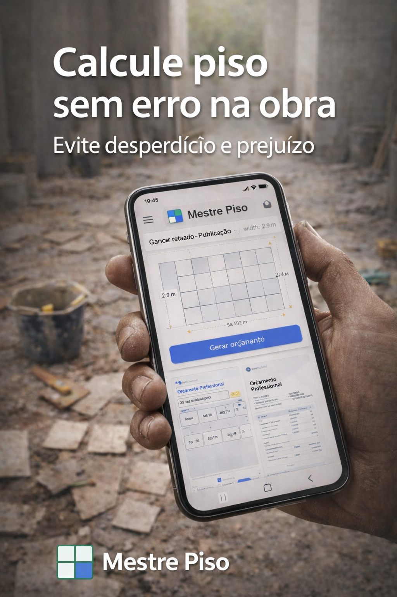

Calcule piso sem erro e evite desperdício na obra
Use o Mestre Piso como sua calculadora de piso para calcular quantidade de piso por m², visualizar a paginação, estimar cortes, analisar consumo e gerar relatório em PDF com mais rapidez, mais precisão e mais apresentação profissional.
- ✓Menos desperdício e retrabalho
- ✓Visualização clara da paginação
- ✓Relatório em PDF para cliente e equipe
Ideal para pedreiros, assentadores, engenheiros, arquitetos, vendedores de material de construção e equipes de obra. Se você busca uma calculadora de piso online, esta é a solução certa para começar.

Como funciona
Simples, rápido e técnico — em poucos passos você organiza o cálculo e visualiza melhor a execução.
Insira as medidas do ambiente e do piso
Informe dimensões do ambiente, peça e junta. O app organiza os cálculos automaticamente.
Visualize a paginação antes de executar
Veja o alinhamento e a distribuição das peças com mais clareza antes de iniciar o assentamento.
Exporte o relatório em PDF
Gere um documento para obra, cliente ou equipe, facilitando conferência e apresentação.

Funcionalidades
Recursos essenciais para calcular, visualizar e apresentar o assentamento com padrão profissional.
Cálculo automático
Calcule quantitativos, peças e distribuição do piso em poucos segundos.
Paginação em tempo real
Visualize o padrão de assentamento com mais clareza antes da execução.
Cortes identificados
Antecipe recortes e alinhamentos para reduzir erros e retrabalho na obra.
Exportação em PDF
Gere um relatório técnico para cliente, equipe e conferência no local.
Veja o app em ação
Telas reais do Mestre Piso mostrando cálculo, orientação e apoio na decisão de compra.

Calcule com rapidez
Informe os dados do ambiente e tenha um cálculo mais claro para a obra.
Evite desperdício
Visualize melhor o consumo e reduza erros na compra de material.
Saiba quanto comprar
Tenha mais segurança para decidir a quantidade antes de iniciar o serviço.
Seu ajudante na obra
Organize o cálculo de forma prática e profissional no celular.
Essencial no dia a dia
Recurso útil para pedreiros, assentadores, engenheiros e construtores.
Benefícios na prática
Mais previsibilidade na compra, menos retrabalho na execução e mais confiança na apresentação ao cliente.
- ✓Mais precisão na estimativa de material
- ✓Mais clareza no planejamento do assentamento
- ✓Mais apoio para explicar a paginação ao cliente
- ✓Mais agilidade para orçar e executar
Teste a calculadora online
Faça uma prévia rápida do cálculo e conheça a proposta do Mestre Piso antes de baixar o app.
Ideal para quem pesquisa no Google por calculadora de piso, calcular porcelanato, quantidade de caixas e quer validar a solução antes de usar todos os recursos no aplicativo.
O que é o Mestre Piso
O Mestre Piso é um aplicativo para calcular piso, porcelanato, quantidade de caixas, cortes e paginação de ambientes com mais precisão.
Com o Mestre Piso, profissionais e clientes conseguem planejar melhor a compra de material, visualizar a paginação antes da execução e reduzir desperdícios na obra.
A ferramenta é útil para pedreiros, assentadores, engenheiros, arquitetos, vendedores de loja de material de construção e também para quem deseja calcular porcelanato e cerâmica com mais segurança.
Se você busca uma calculadora de piso prática, com visualização clara e exportação em PDF, o Mestre Piso foi desenvolvido para tornar esse processo mais rápido, técnico e profissional.
Também é uma boa solução para quem procura um aplicativo para calcular piso, quer entender como calcular piso por metro quadrado ou precisa saber quanto de argamassa por m².
Gratuito para todos. Completo para profissionais.
A versão gratuita possui anúncios para manter o aplicativo acessível. Para quem precisa de mais recursos, mais controle e uma experiência sem anúncios, o Mestre Piso Pro libera as funções avançadas.
O PRO foi criado para quem quer reduzir erros, valorizar o serviço e apresentar orçamento com mais profissionalismo.
Versão Free
Ideal para começar e fazer os cálculos essenciais do dia a dia.
- Funções essenciais de cálculo e paginação
- Simulação visual padrão
- Exportação de PDF padrão
- Com anúncios para manter o app acessível
Mestre Piso Pro
Para uso profissional: mais recursos, mais controle e uma experiência mais completa.
- Cálculo de custo de material
- Cálculo de argamassa e rejunte
- Desconto de ambiente
- Paginação em diagonal
- Amarração 15%
- Amarração 50%
- PDF completo com cálculos
- Orçamento profissional para enviar ao cliente
- Sem anúncios
Mensal: R$ 19,90 • Anual: R$ 149,99
O Mestre Piso Pro foi feito para quem quer trabalhar com mais precisão, mais apresentação e mais lucro.
Não é só uma versão com mais funções. É uma ferramenta para evitar erros, calcular melhor, apresentar com mais profissionalismo e fechar mais serviços.
Um único erro de cálculo na obra pode custar mais do que a assinatura do PRO.
Versão Free
Boa para conhecer o app e usar o essencial.
- Funções básicas de cálculo
- Simulação visual padrão
- PDF padrão
- Com anúncios
- Recursos limitados para uso profissional
Mestre Piso Pro
Para quem quer atender melhor, calcular melhor e apresentar melhor.
- Cálculo de custo de material
- Cálculo de argamassa e rejunte
- Desconto de ambiente
- Paginação diagonal
- Amarração 15%
- Amarração 50%
- PDF completo com cálculos
- Orçamento profissional para enviar ao cliente
- Sem anúncios
Cálculo de custo de material
Saiba quanto o material realmente representa no serviço e evite perder dinheiro por erro de estimativa.
Argamassa e rejunte
Tenha uma base mais precisa para compra e execução, reduzindo falta ou excesso de material.
Desconto de ambiente
Desconte áreas que não entram no assentamento e chegue em um cálculo mais justo e profissional.
Paginação avançada
Use diagonal, amarração 15% e amarração 50% para planejar diferentes padrões de assentamento.
PDF completo
Exporte um relatório mais detalhado, com cálculos e informações que passam mais confiança para cliente e equipe.
Orçamento profissional
Monte propostas mais organizadas para apresentar ao cliente e valorizar seu serviço.
Trabalhe com mais segurança e mais valor percebido
O PRO ajuda você a calcular melhor, apresentar melhor e evitar prejuízos que normalmente acontecem por erro, pressa ou cálculo incompleto.
Use o app como profissional e entregue mais confiança em cada obra.
Assinatura opcional. Valores e disponibilidade podem variar conforme a Google Play.
Baixe o Mestre Piso e tenha mais precisão, menos desperdício e mais apresentação profissional na obra.
Calcule mais rápido, visualize melhor a paginação e gere PDF para cliente e equipe.
Como calcular piso por metro quadrado?
Para calcular piso por metro quadrado, multiplique a largura pelo comprimento do ambiente. Depois, considere perdas de corte e paginação. Com a calculadora de piso online do Mestre Piso, você faz isso automaticamente e evita erros na obra.
Quantos pisos comprar?
A quantidade de pisos depende da área e do tipo de assentamento. Nossa ferramenta calcula automaticamente as peças, cortes e sobra de material, garantindo economia e precisão. Se você está pesquisando quantas peças de piso 60x60 precisa por m², também temos um conteúdo específico para isso.
Como saber quanto de argamassa usar?
O consumo varia conforme tamanho da peça, desempenadeira, base e técnica de assentamento. Para entender melhor o tema, veja nosso conteúdo sobre quanto de argamassa por m².